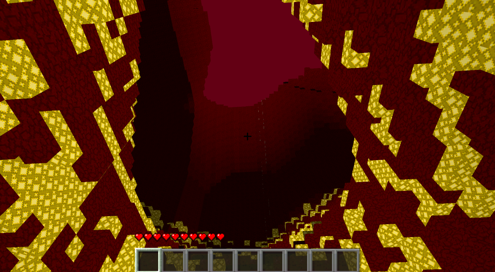
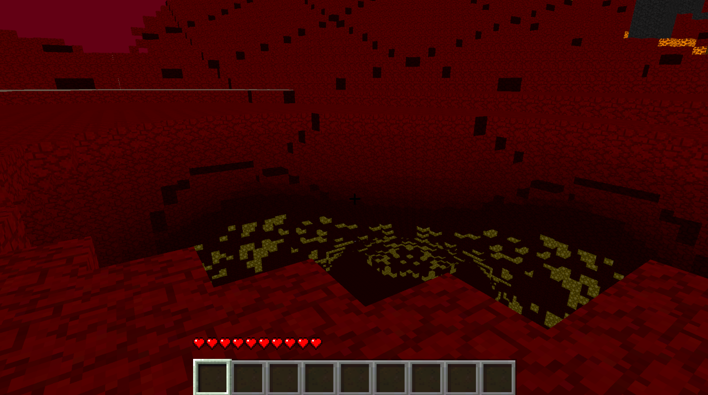
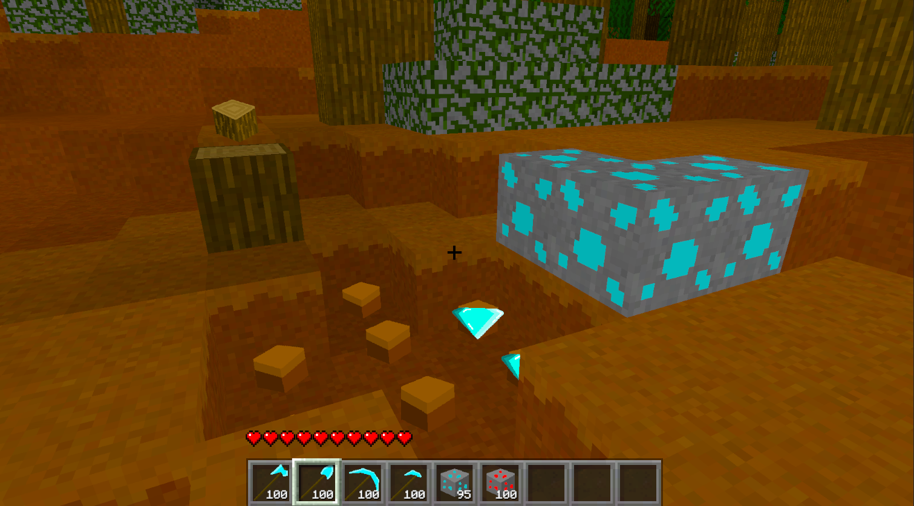
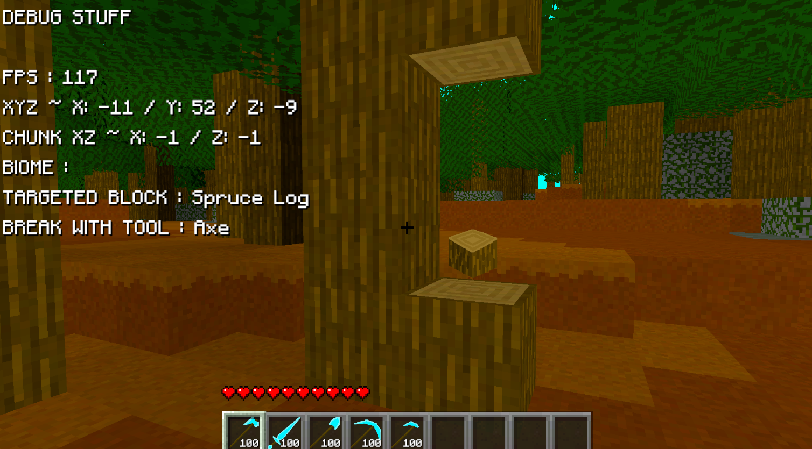

Devlog Two Overview
I've been focusing a lot on what I'm what calling the Inferno Realm. It's just my version of the Nether from Minecraft. It's still in progress, as everything I've been working on still is, but it's kinda cool regardless.
Right now there is no official way to get to the Inferno Realm from the Overworld, but I do have some ideas for that. And they might even be implemented by the next devlog. Depends on how much I get distracted by other ideas I want to add into the game.
Main Features
The Inferno Realm doesn't really have much in the way of features, but I've been pushing my world generation to the limit. The hills are much bigger than in the overworld, and the caves are less caves and more giant cavernous holes in the inferno realm. In the pictures below, you'll also notice a unique feature I thought would make the inferno realm feel more interesting: giant blackstone pillars. You'll also notice in the pictures below is the glow stone I have peppered throughout in the lower layers in the ground. I'll likely change this out for another block in the future, but I like the idea of a block being in the ground like that.


You'll have to forgive some of the rendering problems and cross chunk lighting problems I'm having. That area is far from my expertise, and I'm having problems solving those issues. I'll get it fixed up eventually, I'm just going to learn more about the issue slowly before I attempt to mess more with it.
Another cool game feature I've added in is that blocks now drop their respective items. It's just pngs with item icons, but it works for now. When breaking a block, the dropped item will spawn and fall onto the ground below. Then it'll hover there and face the player till it eventualy despawns. In the future, I think I want to add a cool animation to the dropped item, but that isn't the type of thing I want to prioritize right now. Not that I really work on important features right now.

Biomes
The Inferno Realm has two different biomes currently: Desolate Hills and Lava Depths. I don't actually have any water or lava in the game yet, but when I do, lava will go in the depths. That part will make my Inferno Realm look more similar to the Nether in Minecraft.
The Desolate Hills is an interesting biome to look at. Using the Blackstone block I added into the game, I created giant blackstone pillars jutting out of the hills. This really adds a sense of height into the dimension. That height is complimented by the giant gaping holes I've generated above and below ground. They really are everywhere, and are even bigger than they look. There's pictures of this earlier on in the devlog.
Blocks
There has been a few more blocks added into the new dimension. The main one is Inferno Stone, which is basically just Netherack from Minecraft. Others are Blackstone, Quartz Ore, and Glowstone. Those three are all from Minecraft as well, though I use them in very different fashions.
I've also been adding a lot of other items and blocks, not just those related to the Inferno Realm. For instance, I've added tools such as a shovel, axe, pickaxe, sword, and a hoe. With those tools, I've implemented the feature of using those tools to harvest their respective blocks. So shovels can mine dirt, and axes can chop wood, and the other tools follow work along that line. Right now, the blocks can't be mined with the player's bare hands, and can be only insta-mined with the tools, but that's something I'm debating how exactly I want to work, since I don't want an exact copy of Minecraft and it's exact features.

For the players convenience, I've added what tools are required to mine a block in the debug menu. By the way, I do have a debug menu, though there isn't much in it yet. Anyways, you can see the menu and tool requirement in the above picture.
Conclusion
The main feature of this devlog is the Inferno Realm, where I've been doing some interesting terrain, and adding in cool blocks. As I mentioned earlier, it's not done, but it's just cool enough to have another dimension in the game. I'm not sure what I want to do for the next devlog, but don't be surprised if there's a bunch of new blocks, as I've been planning a bunch of blocks to add as a side thing for the project.
There isn't actually that much in this devlog compared to the first devlog, but I do have a full time job. Can't be spending all my time working on this project. I've also worked on more in this devlog than I mentioned. Such as all the new item icons that don't serve a purpose yet, such as: carrot, stick, egg, a brick, and so much more. There's a lot of small things like that - that don't serve enough of a purpose yet to talk about. Other examples of this is the player inventory or enemies. Both things that work, but aren't fleshed out enough with the other systems to talk about. So, they'll get pushed to other devlogs in the future.